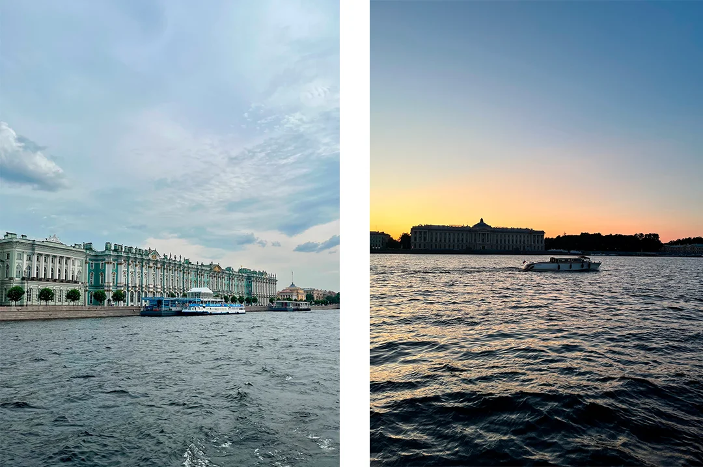
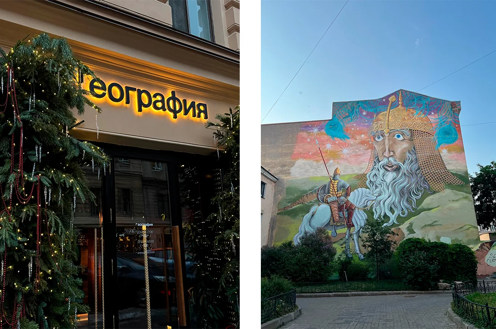
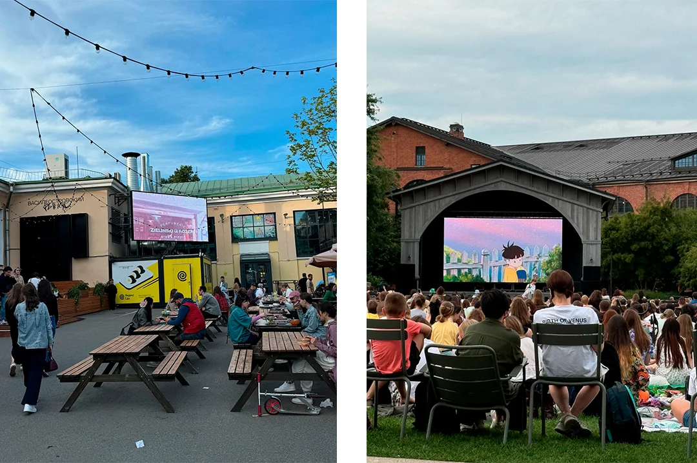
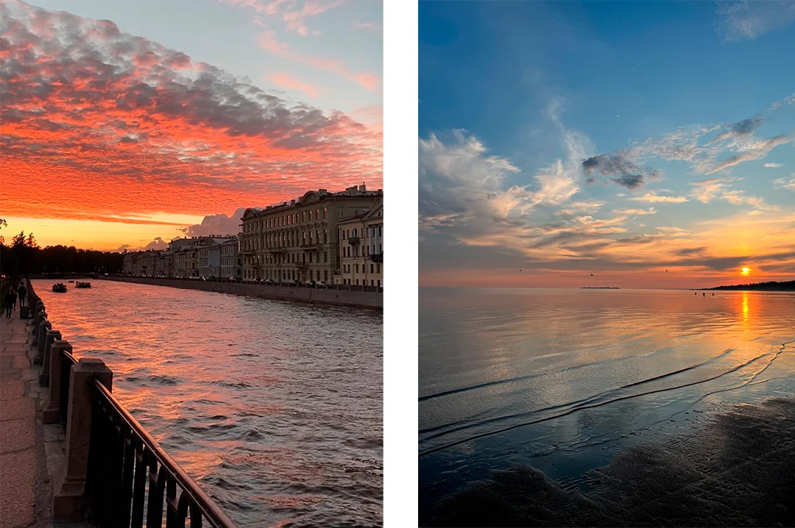
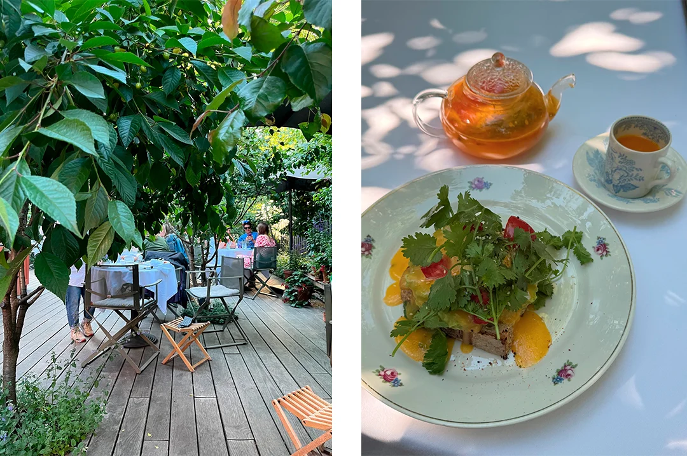

Белые ночи в Петербурге: идеи для тех, кто хочет получить максимум кайфа
Автор: Диана Акчурина
Идеи прогулок и досуга во время белых ночей. Материал помогает собрать вечернюю и ночную программу с учётом особого летнего ритма города.
Читать полную статью на блоге Островка →



Фото: Диана АкчуринаИсточник изображения


Фото: Диана АкчуринаИсточник изображения


Фото: Диана АкчуринаИсточник изображения


Фото: Диана АкчуринаИсточник изображения


Фото: Диана АкчуринаИсточник изображения